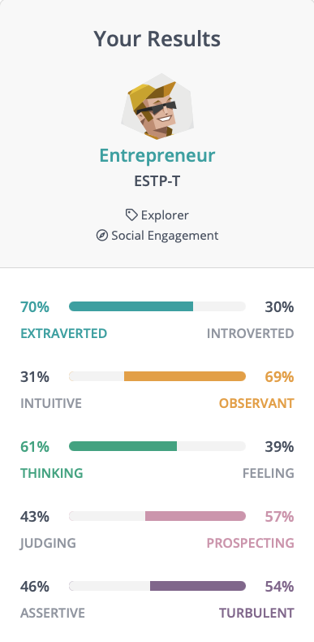

Personal Profile
The results of the Myers-Briggs personality test, VARK learning style test, and Big Five personality have reinforced my ideas about my personality traits and learning style. The Myers-Briggs personality test has indicated that I am a turbulent entrepreneur (ESTP-T), meaning that I am bold and make decisions with rationality and practicality in mind. Entrepreneurs also use strong and direct communication skills and do have a talent for making good use out of networking opportunities and meetings with colleagues (NERIS Analytics Limited, 2021). To me, this indicates that I possess the skills to be a natural-born leader due to my strength with direct communication and ability to make decisions based on logic and rationality as opposed to emotion. I am also aware that I may sometimes come across as too direct and may need to soften my delivery.
The VARK learning style test has indicated that I have a mild kinaesthetic and visual learning style. This means that I learn best through hands-on application of what has been learnt, as well as absorbing material through visual representation such as text, reports, graphs, and diagrams (VARK Learn Limited, 2021). The test also indicates that learning aurally has less of an impact on my learning as I find other visual and kinaesthetic methods of learning to be far more impactful.
The results from the Big Five personality traits test have indicated that I score high for the traits of extroversion, agreeableness, conscientiousness, and intellect while scoring low for emotional stability. This means that I am outgoing and social while also remaining optimistic and friendly. The score also indicates that I am careful and diligent and am open to new experiences as opposed to being impulsive and conservative or traditional (Open-Source Psychometrics Project, 2019). The results of this personality trait test align with the results of the Myers-Briggs personality test.
| Test Type | Results |
|---|---|
| Myers-Briggs | ESTP-T |
| VARK Learning Style | Kinesthetic and Visual Learner |
| Big 5 Personality Traits | High in Extrovert, Agreeable, Conscientious, Intellectual Low in Emotional Stability |
The results from these tests mean that when working in a team I may be suitable in taking a leadership role as I possess the skill to make group meetings efficient and impactful with my direct communication. I'm not afraid to explore new ideas and to suggest potential different routes to reach the desired outcome for a group project. The results also suggest that I may learn best from the group using kinaesthetic and visual methods. Using diagrams, drawings, graphs, and going through a hands-on run-through or tutorial together is going to ensure that I have the best understanding of the concepts and ideas discussed within the group. Being an entrepreneur (ESTP-T) personality type does have some drawbacks in group settings though. While using direct and clear communication is useful, I will need to consider how this can be perceived by the rest of the group to ensure I don't come across as too blunt. I will also need to learn when to take a step back and not become domineering as all members of the group deserve to have their voices and ideas respected and considered.
When forming a team, I believe that it’s important to choose people that I believe can complement each other's personalities well. The group will benefit from having a variety of different personality types ranging from people who display strong leadership skills, people with well-rounded technical skills, and people with solid design and presentational knowledge. Avoiding clashes or conflicts is not always going to be possible in every group setting, however, I believe it will be a good learning experience to work on certain areas that may require more development.